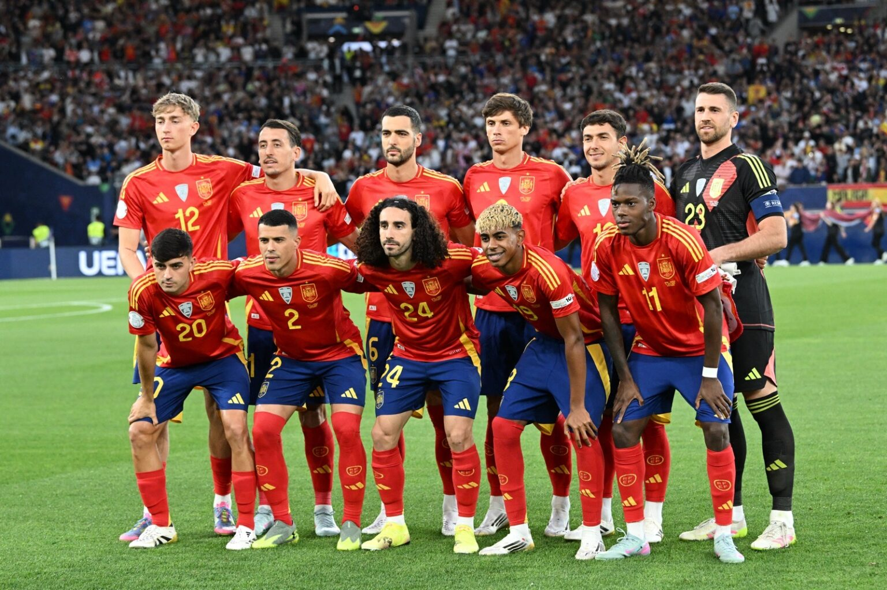

Final Score
 Spain
Spain
1 – 0
Full time (after extra time)
 Argentina
Argentina
⚽ Ferran Torres 106'
Tournament at a Glance
8Matches
14Goals scored
1Goals conceded
7Clean sheets
The Road to the Final
| Stage | Opponent | Score | Result |
|---|---|---|---|
| Group H |  Cape Verde Cape Verde |
0–0 | D |
| Group H |  Saudi Arabia Saudi Arabia |
4–0 | W |
| Group H |  Uruguay Uruguay |
1–0 | W |
| Round of 32 |  Austria Austria |
3–0 | W |
| Round of 16 |  Portugal Portugal |
1–0 | W |
| Quarterfinal |  Belgium Belgium |
2–1 | W |
| Semifinal |  France France |
2–0 | W |
| Final | Argentina |
1–0 (aet) | W |

The Final
The match stayed scoreless through 90 minutes against an Argentina side led by Lionel Messi. Ferran Torres broke the deadlock in the 106th minute of extra time and was named Player of the Match.
Rankings Impact
The day after the final, Spain overtook Argentina to become world No. 1. In the October update it leads with 2011.57 points, the only team above 2000, after Nations League wins that included England and Croatia.